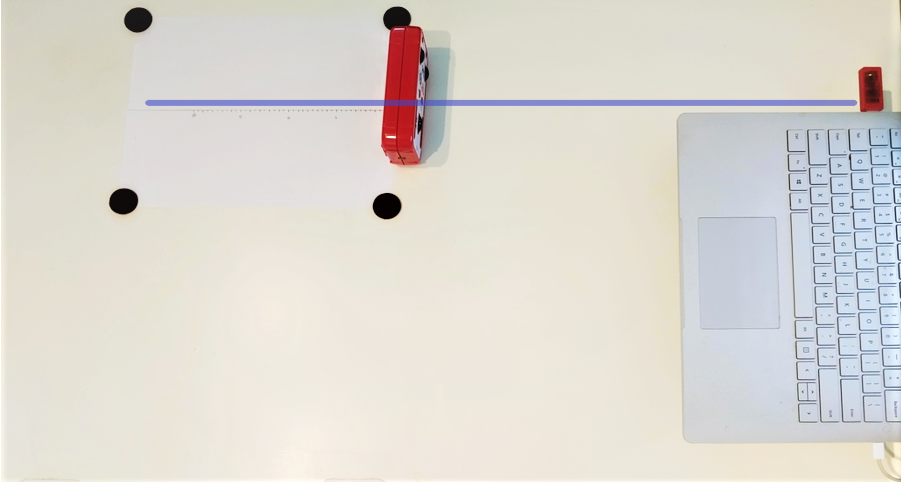

In this lab, we will use interference of light to measure the speed of light indirectly. The iOLab device comminicates with the USB dongle using wifi, which --- you guessed it --- is simply ordinary light with a relatively large wavelength (compared to "visible" light, that is). Like many wifi devices and routers, the iOLab operates in the 2.4 GHz frequency band.
Since we know the frequency, , if we are able to determine the wavelength, , of the signal, we can find the speed of light by using the fundamental relationship:
When the iOLab device transfers data to the dongle, it transmits coherent waves in all directions. These waves superimpose on one another, experiencing constructive and destructive interference throughout space. The dongle detects the resulting signal at its location. We can use this to measure the wavelength of the light, since a cleverly placed reflector can maximize or minimize the signal strength at the dongle!
In this lab, we will use ordinary aluminum foil as a reflector. When light hits a reflector, it reverses direction while maintaining its phase. By positioning the reflector at various distances behind the iOLab antenna, we can force the signal to interfere with itself --- in simpler terms, the reflected signal will be out of phase in a given location and cancel out the non-reflected signal . The basic idea is captured in Figure 1: the direct (Path 1) and reflected (Path 2) waves will interfere either constructively or destructively at the dongle, depending on the relative path difference R.
Question 1
a) Why is the difference in path length and not just ?
b) Examine the set up closely. You will find that the path difference is not exactly 2d. Explain why we can make this approximation in the calculation.
Question 2
Can we use a piece of wood as the reflector? Explain why or why not.
By moving the reflector to change the distance , we can find the locations that result in a minimum in the wifi signal strength, and hence destructive interference. Recall that constructive interference happens when path difference is an integer multiple of the wavelength. This implies that we should see adjacent minima when R changes by one wavelength (λ), corresponding to changing by λ/2.
The setup for this lab is extremely easy: we need to construct a vertical reflector from aluminum foil, and a horizontal track to move it along which lines up with the iOLab dongle.
Exercise 1


Note: As shown in the figure below, the antenna icon on the iOLab device indicates the general location of the antenna on the internal circuit board. The actual location is a bit further forward. Try to align the center of this green highlighted area with your line to the dongle.

Also you should try to keep the antenna and dongle at the same height. Notice that I raised the laptop on a book in later images to make sure that the dongle was coplanar with the position of the iOLab antenna
Question 3
Why might "wrinkles" interfere with the experiment? Include a ray diagram to support your answer.
In this exercise, we are going to use the Received Signal Strength Indicator (RSSI) on the iOLab dongle to measure the speed of light. The RSSI is a run-of-the-mill wifi signal strength chip, not dissimilar to those in your phones, laptops, tablets etc!
Note: You will need 1.77.1579(or later) of the iOLab application in order to plot the signal strength (called RSSI in sensor list). You most likely have the more recent 1.78.1597 version installed, so don't worry about this unless you cannot find the RSSI data.
Exercise 2


My "trough to trough" measurement yielded 14 seconds, so cm. Note that this was a bad run, so you should not use this data, you have to do your own ;)
Question 4
a) What is the distance between your first and second minimum, ?
b) What is the distance between your second and third minimum, ?
c) What is the discrepancy between your measurements?
d) Based on what you've learned about error analysis, do you think they agree? Provide at least one argument.
e) What is your average measurement, ?
Question 5
Why does the linear offset of your iOLab antenna from the 0 cm mark not matter for this measurement? (Hint: are we making an absolute or relative measurement of ?)
All that's left is to use your measurements to calculate the speed of light! Answer the following questions using your values of
Question 6
a) Using the fact that the iOLab dongle operates on the 2.4 GHz frequency band, calculate your three values for the speed of light using Equation 1.
b) Which of these has the lowest discrepancy with the accepted value?
c) Which of these has the highest discrepancy with the accepted value? Why do you think that is?
d) List at least three sources of error in this experiment, and a way you might improve it if you had access to better tools and equipment in the future. An example might be that your reflector was not perfectly vertical, changing the distance the signal traveled (would your measurement of be larger or smaller in this case :) ? )